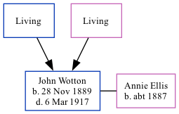

John Thomas Wotton 1889 - 1917
[ Home ] | [ Calendar ] | [ Surnames Index ] | [ Family History ]The son of Thomas Wotton and Mary Mount, John Wotton, the first cousin twice-removed on the mother's side of <a href="I1.html">Nigel Horne</a>, was born in Herne Bay, Kent, England on Nov 28, 1889<span class="citation">1,2,3</span> and baptized there at Christ Church on Feb 23, 1890. He married Annie Ellis at St Andrew, Stockwell Green, London, England on Aug 31, 1913<span class="citation">6</span>.</p><p>Throughout his life, he lived in Herne, Kent, England in 1891<span class="citation">1</span>; and in Clapham, London in 1901<span class="citation">2</span>. In 1917 he was serving in the military in France (<em>regiment: East Surrey Regiment; Rank: Corporal; Service number: 13413</em>). <p>He died on Mar 6, 1917 in Somme, Hauts-de-France, France<span class="citation">4,5</span> and was buried at Abbeville Communal Cemetery Extension, Abbeville, Hauts-de-France in 1917.
Parents
- Thomas
- Mary A
Citations
- 1891 England Census Online publication - Provo, UT, USA: The Generations Network, Inc., 2005.Original data - Census Returns of England and Wales, 1891. Kew, Surrey, England: The National Archives of the UK (TNA): Public Record Office (PRO), 1891. Data imaged from The National (Relation to Head of House: Son)
- 1901 England Census Online publication - Provo, UT, USA: The Generations Network, Inc., 2005.Original data - Census Returns of England and Wales, 1901. Kew, Surrey, England: The National Archives of the UK (TNA): Public Record Office (PRO), 1901. Data imaged from the National (Relation to Head of House: Son)
- England & Wales, FreeBMD Birth Index, 1837-1915 Online publication - Provo, UT, USA: The Generations Network, Inc., 2006.Original data - General Register Office. England and Wales Civil Registration Indexes. London, England: General Register Office. © Crown copyright. Published by permission of the Cont
- Commonwealth War Graves Commission Debt Of Honour - Findmypast
- Find A Grave http://www.findagrave.com
- England & Wales Marriages 1837-2005 - Findmypast
Media
John Thomas Wotton - WW1 Record

England & Wales births 1837-2006 - BMD/B/1889/4/AZ/000624/278
England & Wales marriages 1837-2008 - BMD/M/1913/3/AZ/001389/098
Commonwealth War Graves Commission Debt Of Honour - GBM/CWGC/ROLLOFHONOUR/001059538
England Births & Baptisms 1538-1975 - R_884301632
Kent Baptisms - GBPRS/CANT/B/96678267
Britain, Campaign, Gallantry & Long Service Medals & Awards - GBM/MCI/4892194
Family Tree
Generated by Ged2Site. Last updated on Jul 20, 2025